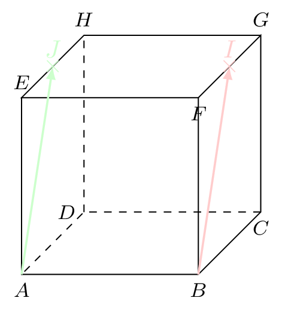
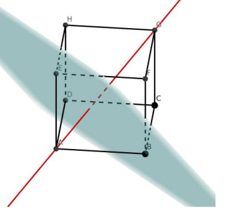
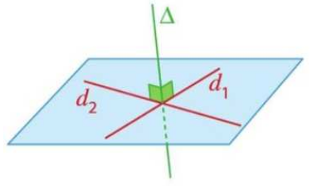
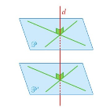

Orthogonalité
Orthogonalité de deux droites
Définition :
Soient \(\ve{u}\) et \(\ve{v}\) deux vecteurs de l’espace.
- \(\ve{u}\) et \(\ve{v}\) sont orthogonaux lorsque \(\ve{u} \cdot \ve{v} = 0\).
- Deux droites sont orthogonales lorsqu’un vecteur directeur de l’une des droites est orthogonal à un vecteur directeur de l’autre droite.
Remarque :
- La notion d’orthogonalité généralise la notion de droites perpendiculaires.
- Deux droites orthogonales ne sont pas nécessairement coplanaires.
- Deux droites orthogonales et coplanaires sont perpendiculaires.
On considère un triangle tel que \(AB=5\), \(BC=13\) et \(AC=12\). Déterminer \(\ve{AC} \cdot \ve{AB}\).
Afficher la correction :
On a \(13^2 = 169\) et \(AB^2 + AC^2 = 5^2 + 12^2 = 25 + 144 = 169\). On en déduit, d’après la réciproque du théorème de Pythagore, que \(ABC\) est un triangle rectangle en \(A\), donc que \((AB) \perp (AC)\). Ainsi, \(\ve{AB} \cdot \ve{AC} = 0\).
Propriété :
- Deux droites \(d_1\) et \(d_2\) sont orthogonales si et seulement s’il existe une droite \(d'\) parallèle à \(d_1\), coplanaire à \(d_2\) et perpendiculaire à \(d_2\).
- Si deux droites sont parallèles, alors toute droite orthogonale à l’une est orthogonale à l’autre.
- Si deux droites sont orthogonales, alors toute droite parallèle à l’une est orthogonale à l’autre.
Démonstration :
Soient \(d_1\), \(d_2\) et \(d'\) de vecteurs directeurs respectifs \(\ve{v_1}\), \(\ve{v_2}\) et \(\ve{v'}\).
- C’est la définition.
- Soit \(d_1 // d_2\), alors il existe \(k \in \mathbb{R}^*\) tel que \(\ve{v_1} = k \cdot \ve{v_2}\). Soit \(d' \perp d_1\), alors \(\ve{v'} \cdot \ve{v_1} = 0\). Ainsi, \(\ve{v'} \cdot (k \cdot \ve{v_2}) = 0\), donc \(d_2 \perp d'\).
- Soit \(d_1 \perp d_2\), alors \(\ve{v_1} \cdot \ve{v_2} = 0\). Soit \(d' // d_1\), alors il existe \(k \in \mathbb{R}^*\) tel que \(\ve{v_1} = k \cdot \ve{v'}\). Ainsi, \(k \cdot \ve{v'} \cdot \ve{v_2} = \ve{v_1} \cdot \ve{v_2} = 0\), donc \(d_2 \perp d'\).
Dans le cube \(ABCDEFGH\), démontrer que les droites \((CD)\) et \((EH)\) sont orthogonales.
Afficher la correction :
La droite \((AD)\) est parallèle à la droite \((EH)\) et passe par \(D\). Les droites \((AD)\) et \((CD)\) sont coplanaires (elles appartiennent au plan de la face \(ABCD\)). Dans ce plan, \(ABCD\) étant un carré, les droites \((AD)\) et \((CD)\) sont perpendiculaires. On en déduit que la droite \((CD)\) est orthogonale à la droite \((EH)\).
On considère le cube \(ABCDEFGH\) de côté 1 ci-dessous. On note \(I\) le milieu de \([FG]\) et \(J\) le milieu de \([EH]\).
Les droites \((AI)\) et \((BJ)\) sont-elles orthogonales ?
On considère le cube \(ABCDEFGH\) de côté 1 ci-dessous. On note \(I\) le milieu de \([FG]\) et \(J\) le milieu de \([EH]\). Les droites \((AI)\) et \((BJ)\) sont-elles orthogonales ?

Afficher la correction :
On a : \[ \begin{aligned} \ve{AJ} \cdot \ve{BI} &= (\ve{AB} + \ve{BF} + \ve{FJ}) \cdot (\ve{BA} + \ve{AE} + \ve{EI}) \\ &= \ve{AB} \cdot \ve{BA} + \ve{AB} \cdot \ve{AE} + \ve{AB} \cdot \ve{EI} + \ve{BF} \cdot \ve{BA} + \ve{BF} \cdot \ve{AE} + \ve{BF} \cdot \ve{EI} + \ve{FJ} \cdot \ve{BA} + \ve{FJ} \cdot \ve{AE} + \ve{FJ} \cdot \ve{EI} \end{aligned} \]
Or : * \(\ve{AB} \cdot \ve{BA} = -AB^2 = -1\) * \(\ve{AB} \cdot \ve{AE} = 0\) car \((AB) \perp (AE)\) * \(\ve{AB} \cdot \ve{EI} = \ve{AB} \cdot (\frac{1}{2}\ve{EG}) = 0\) car \((AB) \perp (EG)\) * \(\ve{BF} \cdot \ve{BA} = 0\) car \((BF) \perp (BA)\) * \(\ve{BF} \cdot \ve{AE} = \ve{AE} \cdot \ve{AE} = AE^2 = 1\) * \(\ve{BF} \cdot \ve{EI} = \ve{BF} \cdot (\frac{1}{2}\ve{EG}) = 0\) car \((BF) \perp (EG)\) * \(\ve{FJ} \cdot \ve{BA} = 0\) car \((FJ) \perp (BA)\) * \(\ve{FJ} \cdot \ve{AE} = 0\) car \((FJ) \perp (AE)\) * \(\ve{FJ} \cdot \ve{EI} = (\frac{1}{2}\ve{FH}) \cdot (\frac{1}{2}\ve{EG}) = \frac{1}{4} \ve{FH} \cdot \ve{EG} = 0\) car les diagonales d’un carré sont perpendiculaires.
On en déduit que \[\ve{AJ} \cdot \ve{BI} = -1 + 0 + 0 + 0 + 1 + 0 + 0 + 0 + 0 = 0\] Les vecteurs sont donc orthogonaux, ainsi les droites \((AJ)\) et \((BI)\) sont orthogonales.
Orthogonalité d’une droite et d’un plan
Définition :
Une droite \(d\) est perpendiculaire (ou orthogonale) à un plan \(\mathscr{P}\) lorsqu’elle est orthogonale à deux droites sécantes de \(\mathscr{P}\).
Remarque :
Ainsi, soit \(\ve{w}\) un vecteur directeur de \(d\) et \((\ve{u}\, ; \, \ve{v})\) une base de \(\mathscr{P}\), alors : \[d \perp \mathscr{P} \quad \Longrightarrow \quad \ve{u} \cdot \ve{w}=0 \quad \text{et} \quad \ve{v} \cdot \ve{w}=0\]
On considère un cube \(ABCDEFGH\) de côté \(1\). Montrons que \((AG)\) est perpendiculaire au plan \((EBD)\).

Afficher la correction :
Toutes les faces du cube sont des carrés de côté \(1\), donc ont pour diagonales \(d=\sqrt{2}\). De plus :
D’une part, \[ \begin{aligned} \ve{AG} \cdot \ve{ED} &= \ve{AE} \cdot \ve{ED} + \ve{EG} \cdot \ve{ED} \\ &= -AE^2 + \dfrac{1}{2} \left( EG^2 + ED^2 - GD^2 \right) \\ &= -1 + \dfrac{1}{2} (2 + 2 - 2) = 0 \end{aligned} \] Donc \(\ve{AG}\) et \(\ve{ED}\) sont orthogonaux.
D’autre part, \[ \begin{aligned} \ve{AG} \cdot \ve{EB} &= (\ve{AE} + \ve{EG}) \cdot (\ve{EA} + \ve{AB}) \\ &= \ve{AE} \cdot \ve{EA} + \ve{AE} \cdot \ve{AB} + \ve{EG} \cdot \ve{EA} + \ve{EG} \cdot \ve{AB} \\ &= -EA^2 + \ve{EG} \cdot \ve{AB} = -EA^2 + \ve{AC} \cdot \ve{AB} \\ &= -EA^2 + \ve{AB} \cdot \ve{AB} = 0 \end{aligned} \] Donc \(\ve{AG}\) et \(\ve{EB}\) sont orthogonaux.
Les vecteurs \(\ve{EB}\) et \(\ve{ED}\) n’étant pas colinéaires, ils forment une base du plan \((EBD)\). On en déduit donc qu’un vecteur directeur de \((AG)\) est orthogonal à deux vecteurs formant une base de \((EBD)\) donc que la droite \((AG)\) est perpendiculaire au plan \((EBD)\).
Propriété :
- Une droite \(d\) est orthogonale à un plan \(\mathscr{P}\) si et seulement si elle est orthogonale à toute droite de \(\mathscr{P}\).
- Si deux droites sont parallèles, alors tout plan orthogonal à l’une est orthogonal à l’autre.

Démonstration :
Soit \(\ve{w}\) un vecteur directeur de \(d\), \(\ve{w'}\) un vecteur directeur de \(d'\) et \((\ve{u}\, ; \,\ve{v})\) une base de \(\mathscr{P}\).
- Si \(d\) est orthogonale à \(\mathscr{P}\), alors \(\ve{u} \cdot \ve{w}=0\) et \(\ve{v} \cdot \ve{w}=0\). Soit \(\Delta\) une droite quelconque de \(\mathscr{P}\) de vecteur directeur \(\ve{\Delta}\), alors il existe deux réels \(a\) et \(b\) tels que \(\ve{\Delta} = a \ve{u}+b\ve{v}\). Ainsi \(\ve{w} \cdot \ve{\Delta} = a(\ve{w} \cdot \ve{u}) + b(\ve{w} \cdot \ve{v}) = 0\), donc \(d\) est orthogonale à \(\Delta\).
- Réciproquement, si \(d\) est orthogonale à toute droite de \(\mathscr{P}\), alors \(d\) est orthogonale à deux droites sécantes de \(\mathscr{P}\), donc par définition elle est orthogonale à \(\mathscr{P}\).
- On suppose que \(d // d'\), alors il existe \(k \in \mathbb{R}\) tel que \(\ve{w'}=k\ve{w}\). Ainsi : \[d \perp \mathscr{P} \quad \Longleftrightarrow \quad \ve{u} \cdot \ve{w}=0 \quad \text{et} \quad \ve{v} \cdot \ve{w}=0 \quad \Longleftrightarrow \quad \ve{u} \cdot \ve{w'}=0 \quad \text{et} \quad \ve{v} \cdot \ve{w'}=0\] Ainsi \(d'\) est orthogonale à \(\mathscr{P}\).
Propriété :
- Si deux plans sont parallèles, alors toute droite orthogonale à l’un est orthogonale à l’autre.
- Si deux plans sont orthogonaux à une même droite, alors ils sont parallèles entre eux.

Démonstration :
Soit \(\mathscr{P}\) et \(\mathscr{P'}\) deux plans et \(d_3\) une droite de vecteur directeur \(\ve{w}\).
On suppose que les plans sont parallèles, et on considère alors le repère vectoriel \((\ve{u}\, ; \, \ve{v})\). Soit \(d_1\) et \(d_2\) les droites de \(\mathscr{P}\) de vecteurs directeurs \(\ve{u}\) et \(\ve{v}\), et \(d_1'\) et \(d_2'\) les droites de \(\mathscr{P'}\) de vecteurs directeurs \(\ve{u}\) et \(\ve{v}\). Si \(d_3\) est orthogonale à \(\mathscr{P}\), alors \(d_3\) est orthogonale à \(d_1\) et \(d_2\), donc \(\ve{w} \cdot \ve{u} = \ve{w} \cdot \ve{v}=0\). Par conséquent, \(d_3\) est orthogonale à \(d_1'\) et \(d_2'\), donc \(d_3\) est orthogonale à \(\mathscr{P'}\).
On raisonne par l’absurde. On suppose que les plans ne sont pas parallèles. Soit alors \((\ve{u}\, ; \, \ve{v})\) un repère vectoriel de \(\mathscr{P}\) et \((\ve{u'} \, ; \, \ve{v'})\) de \(\mathscr{P'}\) tel que l’un des vecteurs (par exemple \(\ve{v'}\)) n’est pas une combinaison linéaire de \(\ve{u}\) et \(\ve{v}\). Ainsi \((\ve{u}\, ; \, \ve{v}\, ; \, \ve{v'})\) forme une base de l’espace. Si \(d_3 \perp \mathscr{P}\) et \(d_3 \perp \mathscr{P'}\), alors \(\ve{w} \cdot \ve{u} = \ve{w} \cdot \ve{v} = \ve{w} \cdot \ve{v'} = 0\). Donc pour tout \(a, b, c \in \mathbb{R}\), \(\ve{w} \cdot (a\ve{u}+b\ve{v}+c\ve{v'}) = 0\). Cela signifie que \(d_3\) est orthogonale à tout vecteur de l’espace, ce qui est impossible pour un vecteur non nul (un vecteur ne peut pas être orthogonal à lui-même). On en déduit que les plans sont parallèles.